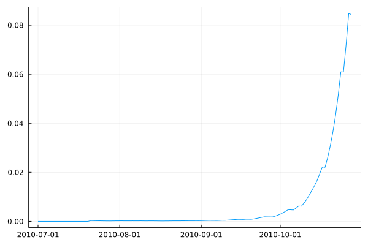

Modelling Disease Epidemics
Epicrop supplies one function, hlipmodel that can be used to predict unmanaged plant disease epidemics. Predefined values for the EPIRICE model can be found in Savary et al. (2012) for the following diseases of rice: bacterial blight, brown spot, leaf blast, sheath blight, tungro. Given other parameters, the model framework is capable of modelling other diseases using the methods as described by Savary et al. (2012).
hlipmodel(
wth,
emergence,
onset,
duration,
rhlim,
rainlim,
H0,
I0,
RcA,
RcT,
RcOpt,
p,
i,
Sx,
a,
RRS,
RRG)Keywords
wth: a data frame of weather on a daily time-step.emergence: expected date of plant emergence entered inYYYY-MM-DDformat. From Table 1 Savary et al. 2012.onsetexpected number of days until the onset of disease after emergence date. From Table 1 Savary et al. 2012.duration: simulation duration (growing season length). From Table 1 Savary et al. 2012.rhlim: threshold to decide whether leaves are wet or not (usually 90%). From Table 1 Savary et al. 2012.rainlim: threshold to decide whether leaves are wet or not. From Table 1 Savary et al. 2012.H0: initial number of plant's healthy sites. From Table 1 Savary et al. 2012.I0: initial number of infective sites. From Table 1 Savary et al. 2012.RcA: crop age modifier for Rc (the basic infection rate corrected for removals). From Table 1 Savary et al. 2012.RcT: temperature modifier for Rc (the basic infection rate corrected for removals). From Table 1 Savary et al. 2012.RcOpt: potential basic infection rate corrected for removals. From Table 1 Savary et al. 2012.i: duration of infectious period. From Table 1 Savary et al. 2012.p: duration of latent period. From Table 1 Savary et al. 2012.Sx: maximum number of sites. From Table 1 Savary et al. 2012.a: aggregation coefficient. From Table 1 Savary et al. 2012.RRS: relative rate of physiological senescence. From Table 1 Savary et al. 2012.RRG: relative rate of growth. From Table 1 Savary et al. 2012.
Returns
- A
DataFramewith the model's output.
Example Usage
Predict an unmanaged epidemic of brown spot at the International Rice Research Institute (IRRI) Zeigler Experiment station in Los Baños, Calabarzon, Philippines. Weather data will be downloaded from the NASA POWER API for use in this example. As the model will run for 120 days, we will download weather data for for 120 days starting on July 01, 2010 and ending on October 28, 2010. To automate this process, you may find the R package, nasapower, useful for downloading weather data in conjunction with RCall.
using Epicrop, DataFrames, Dates, CSV, Plots, Downloads
# download weather data from NASA POWER API
w = CSV.read(Downloads.download("https://power.larc.nasa.gov/api/temporal/daily/point?parameters=PRECTOTCORR,T2M,RH2M&community=ag&start=20100701&end=20101028&latitude=14.6774&longitude=121.25562&format=csv&time_standard=utc&user=Epicropjl"), DataFrame, header = 12)
# rename the columns to match the expected column names for hlipmodel
rename!(w, :RH2M => :RHUM, :T2M => :TEMP, :PRECTOTCORR => :RAIN)
# add columns for YYYYMMDD and lat/lon
insertcols!(w, 1, :YYYYMMDD => range(Date(2010, 06, 30); step=Day(1), length=120))
insertcols!(w, :LAT => 14.6774, :LON => 121.25562)
RcA = [0 0.35; 20 0.35; 40 0.35; 60 0.47; 80 0.59; 100 0.71; 120 1]
RcT = [15 0; 20 0.06; 25 1.0; 30 0.85; 35 0.16; 40 0]
bs = hlipmodel(
wth = w,
emergence = "2010-07-01",
onset = 20,
duration = 120,
rhlim = 90,
rainlim = 5,
H0 = 600,
I0 = 1,
RcA = RcA,
RcT = RcT,
RcOpt = 0.61,
p = 6,
i = 19,
Sx = 100000,
a = 1,
RRS = 0.01,
RRG = 0.1
)
# set plotly backend for plots
plotly()
plot(bs.dates, bs.intensity)
References
Serge Savary, Andrew Nelson, Laetitia Willocquet, Ireneo Pangga and Jorrel Aunario (2012). Modeling and mapping potential epidemics of rice diseases globally. Crop Protection, Volume 34, Pages 6-17, ISSN 0261-2194 DOI: 10.1016/j.cropro.2011.11.009.